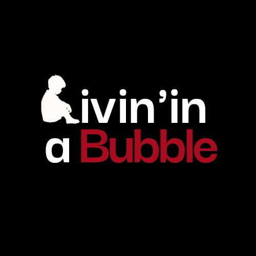
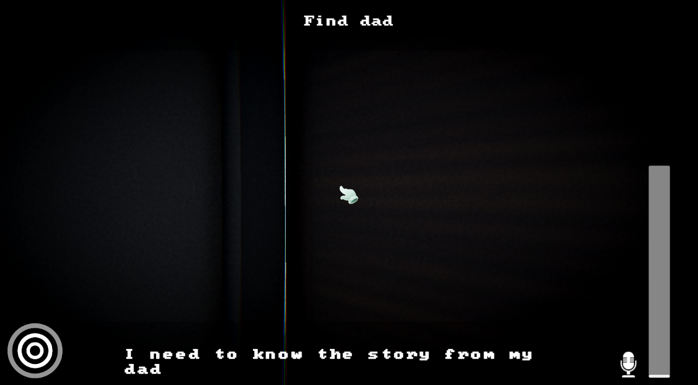
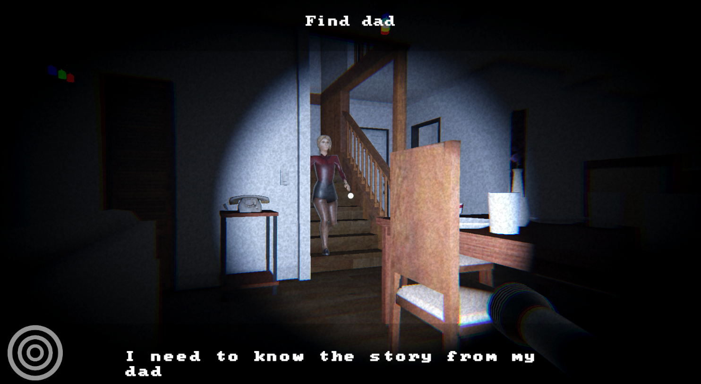
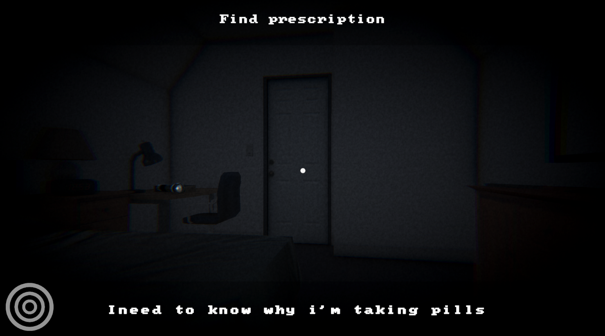

Jeu narratif développé en 48h à la Global Game Jam 2025: Exploration discrète d’une
maison avec narration interactive.
4e place au Global Game Jam Tunisie 2K25.
Unity, Adobe Audition et Blender



